Portfolio
NervBox
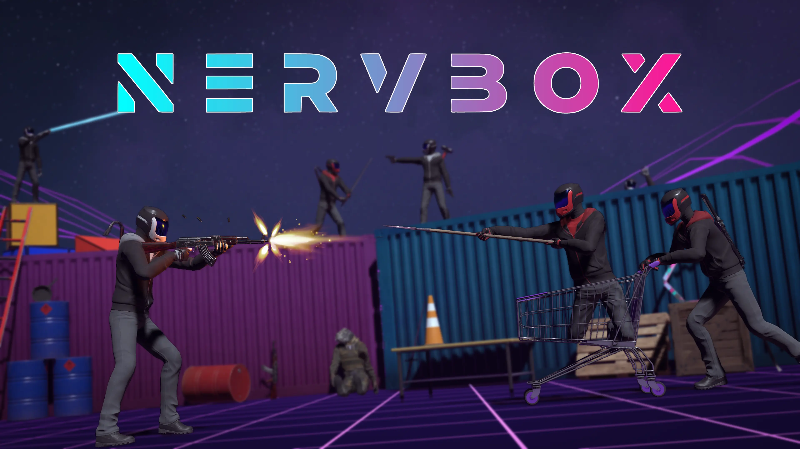
A full-physics VR simulation that lets you explore worlds and create experiences with your friends.
Has
many
advanced never-before-seen methods of syncing fully physics-based characters, with very little
limits to
fidelity. Runs on Meta Quest and PCVR.
Within this project I worked on various aspects, from networking and physical interaction to NPC AI
and
gameplay logic. Guns, swords, and other players all put together results in a super complex project
that
I've spent the better part of 2 years on. Currently I am working on next-gen mod support.
NervBox Website
Tools used:
- Unity
- C#
- Fish Networking
- Epic Online Services
- PhysX
- OpenXR
In Harmony
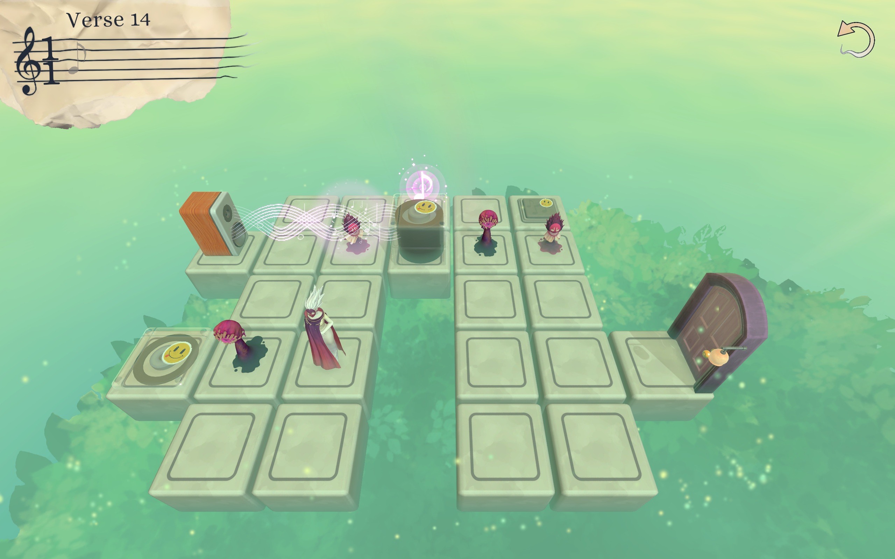
A narrative-driven puzzle game built with a team of 30 people over the span of two semesters.
Features 50
levels and various intertwined mechanics.
Within this project I worked on a little bit of everything, from building core infrastructure such as
the
grid system and turn-based system, to small polish features. I also made a large amount of tools to
speed up
level creation and building.
I also managed the Git repo for the project, ensuring that everyones work was properly getting
integrated.
The repo did not break a single time, even with in-experienced members!
Itch.io Page
GitHub Repo
Tools used:
- Unity
- C#
- GitHub
- Unity Universal Render Pipeline
MAGE Engine
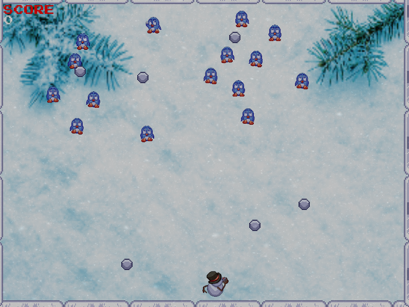
A small game engine written in C++ over the span of one semester. Used to learn about engine
architecture.
The engine features a custom ECS, with 2D rendering capabilities. A small game was built with it.
Git Repo Page
Tools used:
Cologne 2.0
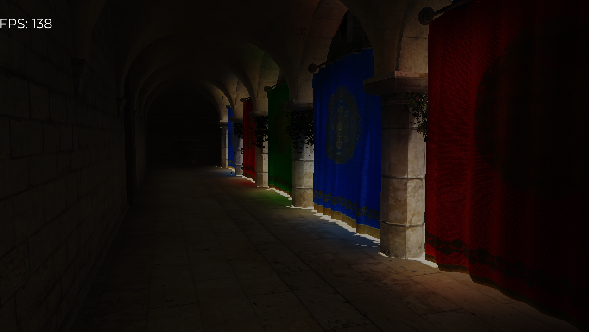
A work-in-progress game without an engine. Features voxel cone traced global illumination, real-time shadows
and physics. This project serves as a place for me to study advanced graphics techniques and scale.
Video Footage
GitHub Repo
Tools used:
- C++
- OpenGL
- Jolt
- SDL3
- Assimp
- Dear ImGui
Aickdreailes
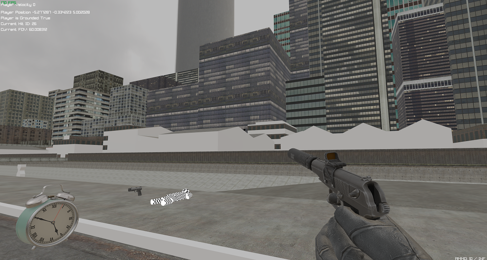
A toy game-engine written in C# using the Raylib library. The project took place over the span of about a
month. The engine features quake-style player movement, PBR lighting, runtime field generation and physics
integration. A basic entity-system was also made.
Video Footage
GitHub Repo
Tools used:
- C#
- OpenGL
- Raylib
- JitterPhysics2
- Dear ImGui
Local Robots
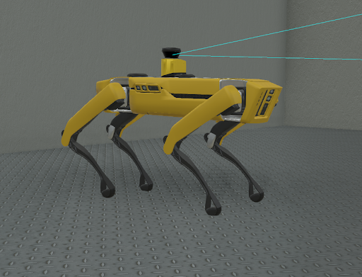
A maze solving robot implementation in Webots. Features inverse-kinematic driven locomotion, a-star path
finding, and PROTO driven maze generation. The locomotion is softened using a series of PID controllers. The
maze solutions were then handed off to a physical representation of the robot. The virtual robot will be
used to teach future classes.
GitHub Repo
Tools used:
- Python
- JavaScript
- Webots
- C++
placeboentertainment.com
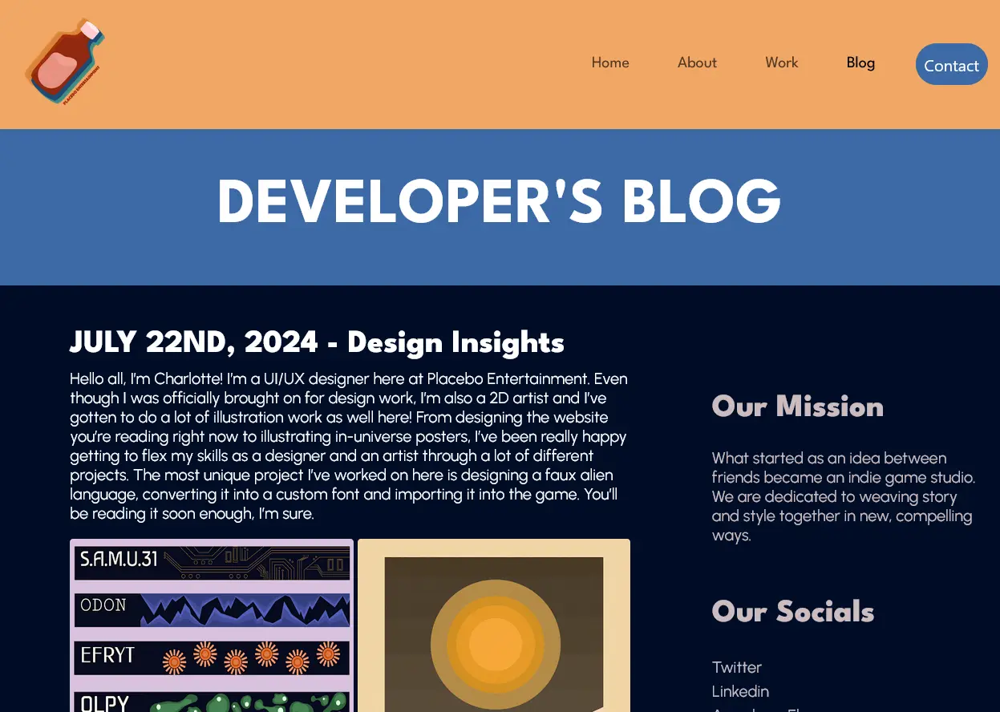
A website made for a project I worked on with some friends from college. After being designed by our UI/UX
designer, I worked to implement it in React. It is fully responsive and is hosted on GitHub pages. To ease
in creating new content for it, it relies on several JSON driven "databases". Alongside getting the site
running, I also deployed the project management server for the team, running on a VPS.
Visit the Site
Tools used:
- React
- Markdown
- JSON
- GitHub Pages
Ferryman Fishing
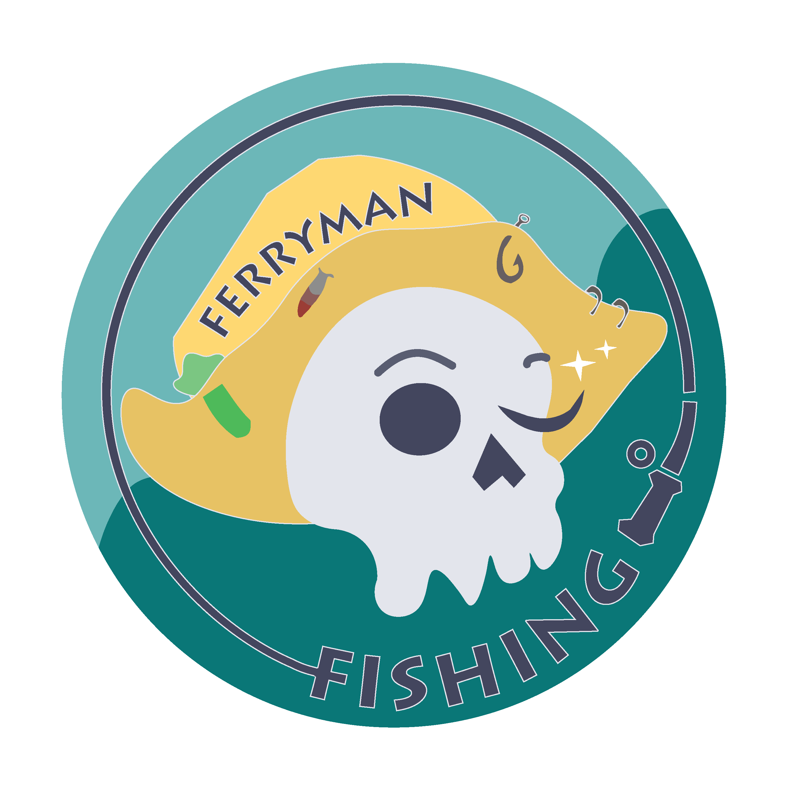
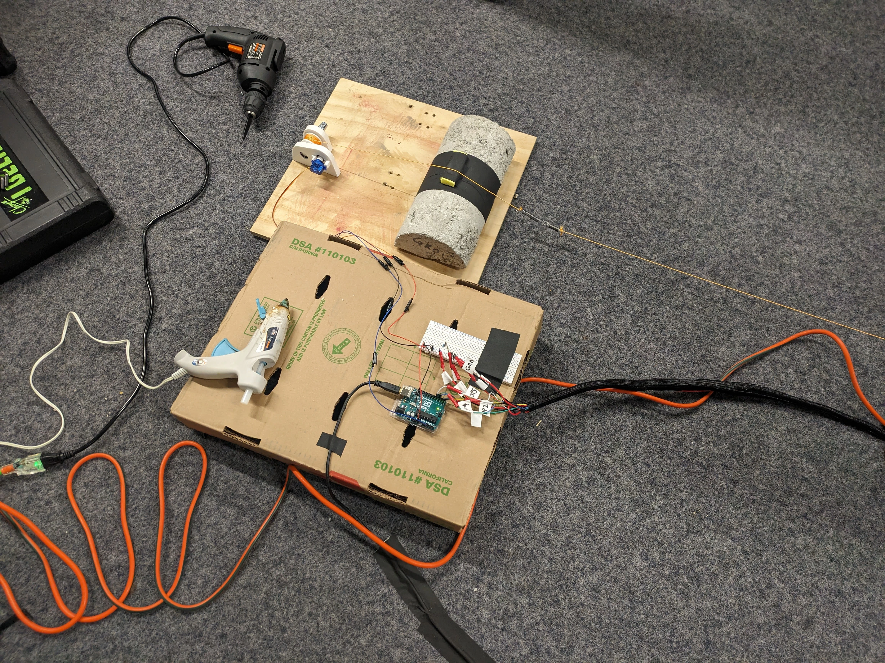
A fishing game built over one semester that involves a real fishing rod! In this project I worked on
designing the circuit for the fishing rod using an Arduino. I also worked on creating a threaded interface
to allow the Arduino to communicate with the game's Unity project as fast as possible. I also worked with
the team's engineers to help design a tension release system. This project was a lot of learning new things
quickly and has spiked my interests in working with hardware.
Exhibit Page
Tools used:
Beyond the Marion
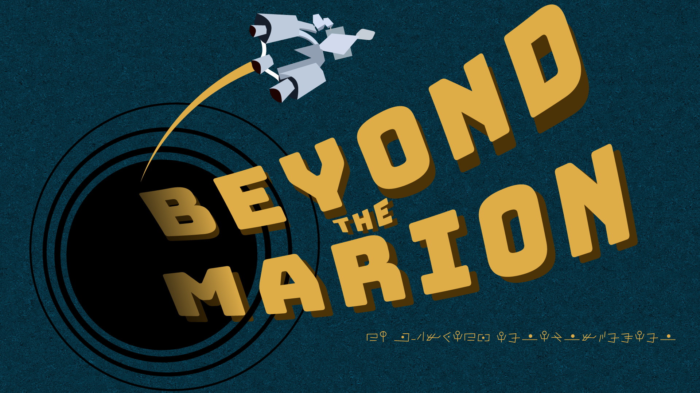
A 3D walking simulator narrative. I primarily worked on audio and project management, where I integrated all
FMOD sounds and ran task management for the project. I also built several UI systems.
Itch.io Page
Tools used:
- Unity
- FMOD
- Wekan
- UI Toolkit
Dynamic Artificial Daylight
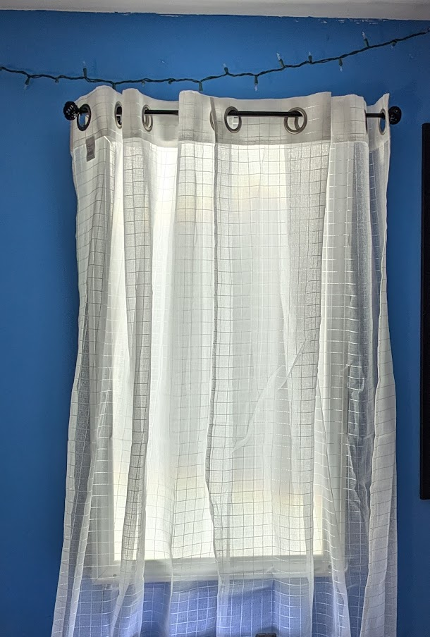
A window built for windowless basements designed to mimic circadian rhythm. The window was built from a dead
flat screen TV, specifically the acrylic diffuser and the fresnel layer. Behind it is an array of LEDs
connected to a Raspberry Pi or ESP32. These LEDs are controlled by a custom program that calculates the
various positions of the sun throughout the day and blends the LED color values accordingly.
Tools used:
- Raspberry Pi
- ESP32
- Python
- C++
CAT 3D Printing Marketplace
A website I worked on for my software engineering class. I worked with 3 other people and 12 other teams to
build a MVP of a marketplace designed to sell 3D printed structures. Throughout the project, multiple
reports were made to Caterpillar, ensuring proper communication between our teams and the teams at Georgia
Tech.
Within this project I focused on backend development and setting up various integration points, specifically
using MongoDB and Express.JS. I also did some frontend work in React. I also did a lot of Git management
since a lot of the teams were unfamiliar with version control. I ended up doing a large amount of the
integration on the project.
GitHub Repo
Tools used:
- MongoDB
- Express.JS
- React
- Node.JS
- GitHub
Cologne Engine
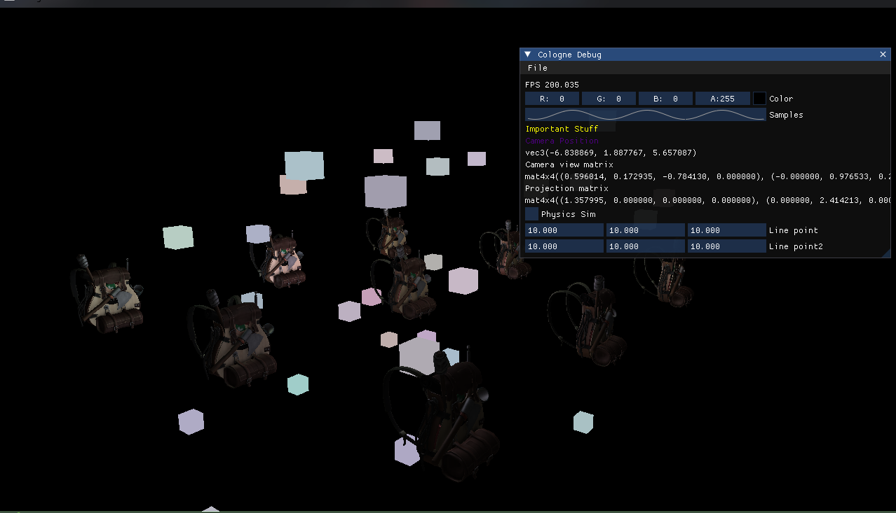
A toy game engine written in C++ and OpenGL to learn graphics programming. Currently contains deferred
lighting, physics powered by Jolt, and a basic entity system. This engine has been super-seeded by Cologne
2.0.
Git Repo Page
Tools used:
Rapid Prototyping Projects
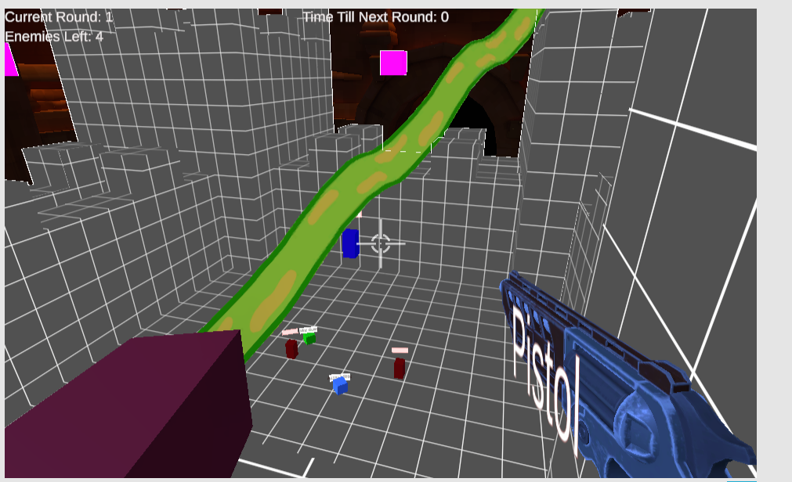
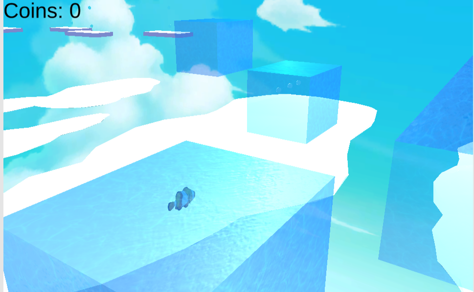
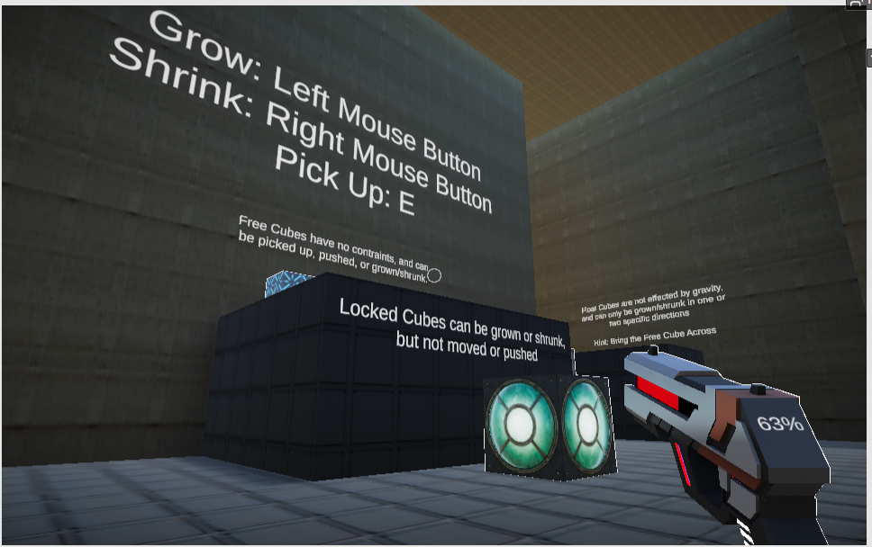
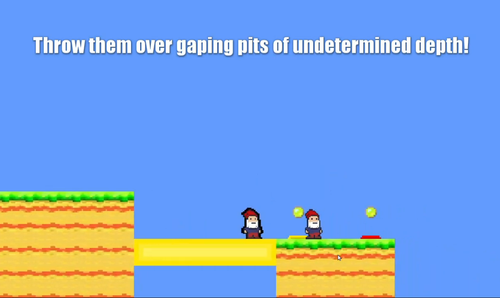
Throughout the span of a semester I worked with around 15 other people on four prototypes: Gun Adders, Gnome
Ladders, Size Matters, and Fish Splatters. Each prototype was made in around 3 weeks. For Gun Adders I
primarily worked on player movement and bullet physics. On Gnome Ladders I worked on some math elements and
UI efforts whilst learning the Godot engine. In Size Matters I developed the main mechanic of growing and
shrinking objects. Lastly on Fish Splatters I implemented the water physics and VFX.
Size Matters Itch.io Page
Gun Adders Itch.io Page
Fish Splatters Itch.io Page
Gnome Ladders Itch.io Page
Tools used:
Snapshot
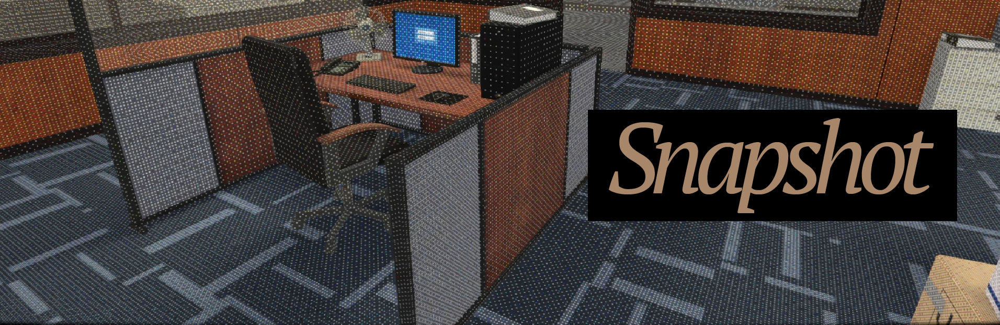
A joke game made in 48 hours for a gamejam.
Itch.io Page
Tools used:
Immersion Sector

A cancelled physics based multiplayer game where I created several new types of multiplayer VR interactions.
Various body physics and IK work was also done to create an accurate representation of a human body in VR.
Specialized Netcode was written in order to solve the shared object interaction problem that comes with
multiplayer VR. I also worked on various physical interactions such as guns and hand-object interaction.
Tech Showcase
Tools used:
- Unity
- Photon Networking
- SteamVR
Kill the King
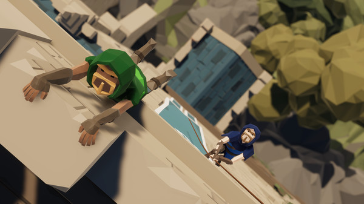
A cancelled physics-based multiplayer co-op assasination game. Part of my work at Quantum Lion Labs. Created
various content for building levels. Also designed several interactable props such as guns and bows. Some of
the tech being built for this project ended up going into NervBox.
Tools used:
- Unity
- Netcode for Gameobjects
- SteamVR
Project Merv
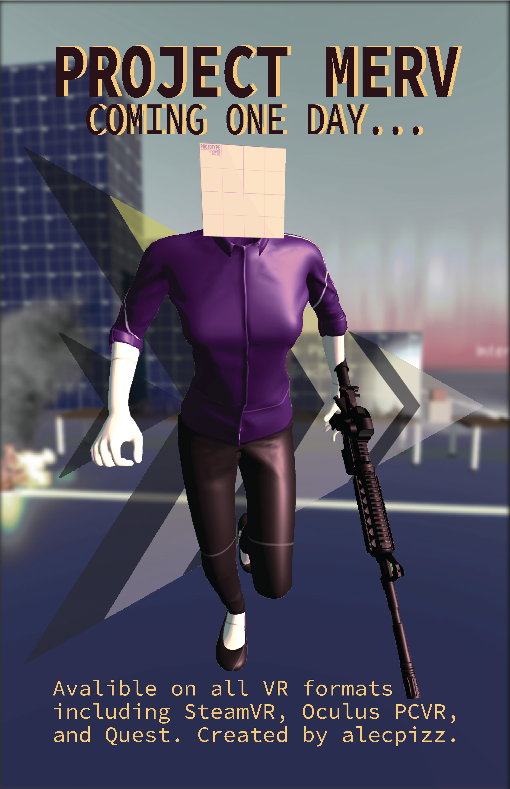
My first dive into the Unity Game Engine, where I learned how to work with its physics engine. Featuring
basic networking, a physics driven VR character controller, and physical interaction. The project ended due
to me working on Immersion Sector and having too ambitious of a scope for a single developer.
Tools used:
MEAR
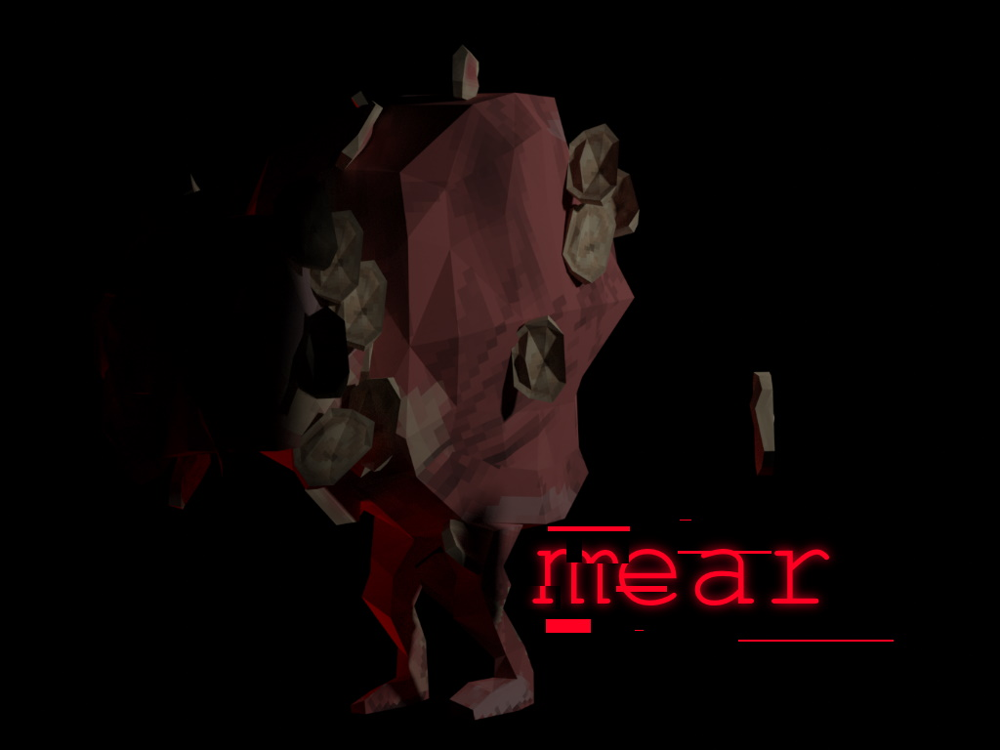
A game made in 72 hours for Amber Waves of Games. Players must navigate horrid creatures using their voice as
power for a flashlight. Created powerups and shout mechanic.
Itch.io Page
Tools used:
Backroads
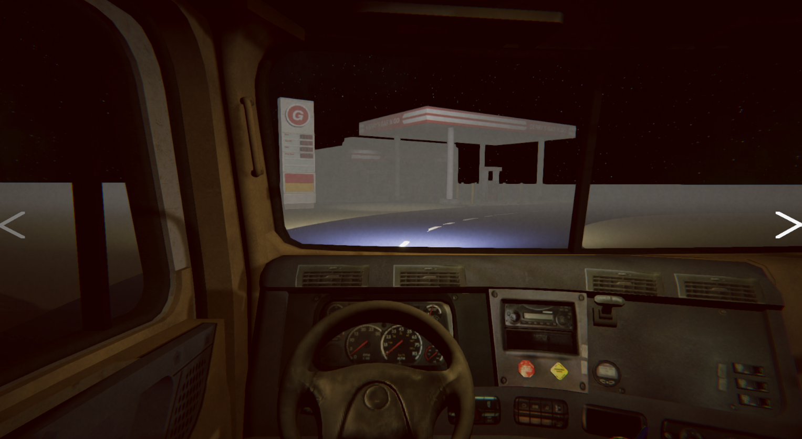
Backroads is an experimental first person driving psychological thriller, where players must navigate desert
back roads while transporting a deadly virus. This game was ambitious for the course for it being the sole
3D game of its type as well as being more narritive focused compared to strictly gameplay progression.
Various artwork was done to try and mimic what driving on empty roads was like. Tools were authored for
other members to easily add events, with inheritance being used to make creating code-driven events easier.
Path finding was used for certain events to ensure that everything was framed properly, further supporting
the narrative. All UIs and 3D models were built to scale on a variety of displays, while still having good
feedback to the player regarding what was currently happening.
Itch.io Page
Tools used: